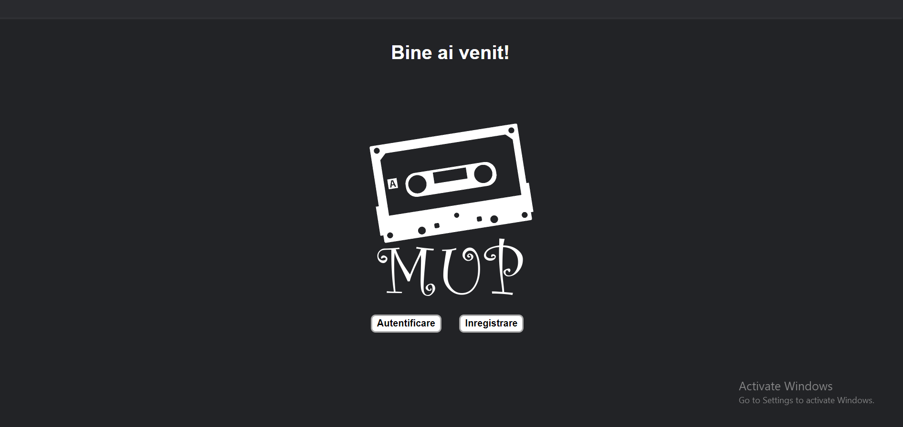
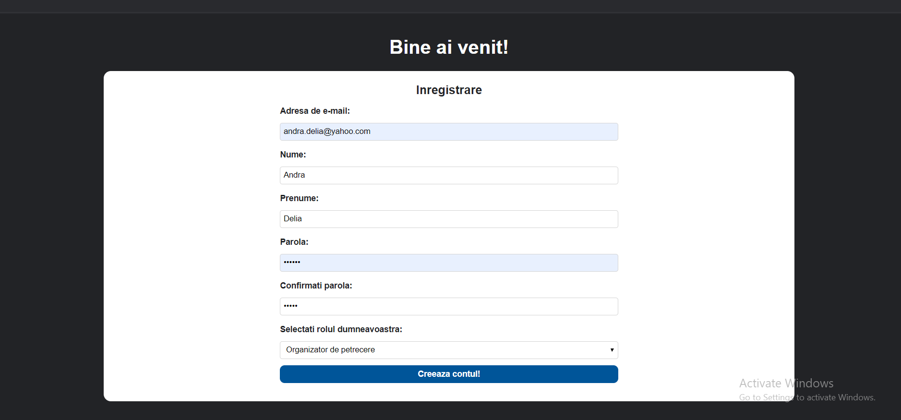
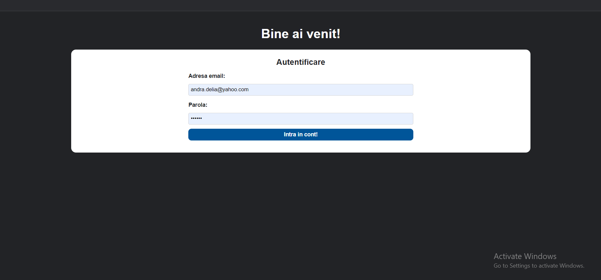
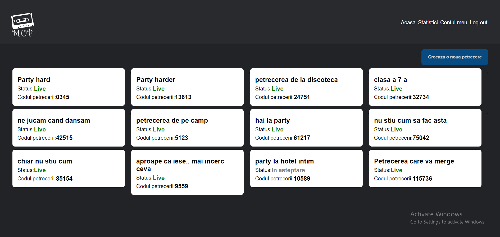
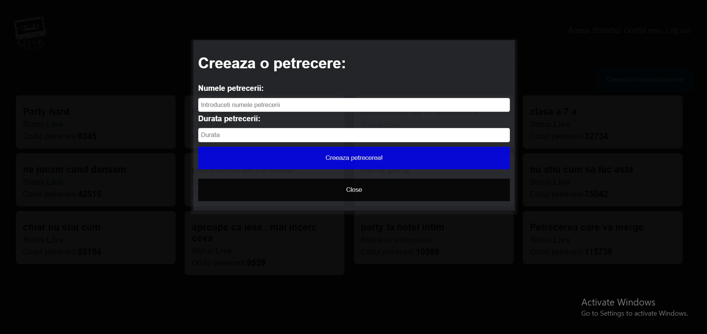
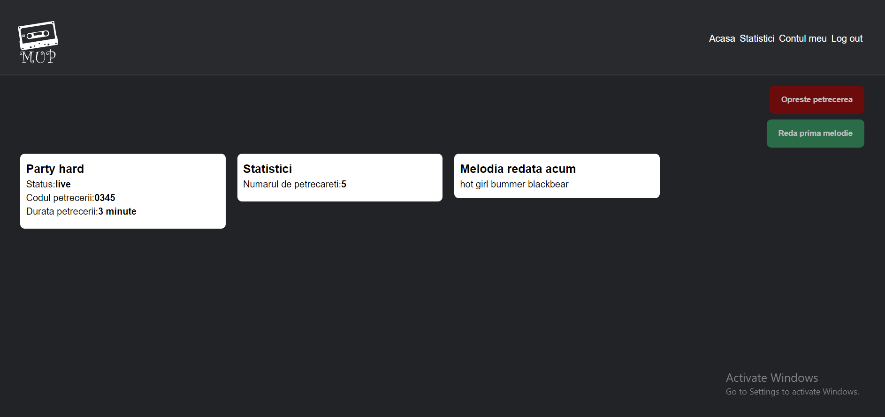
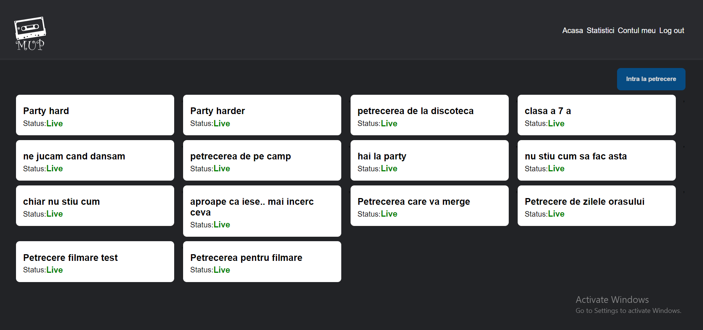
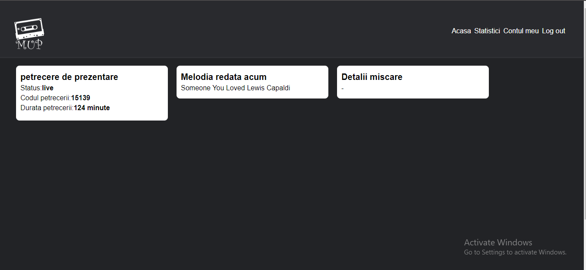

La prima interactiune cu aplicatia, se va deschide pagina de Bun venit!.
De aici utilizatorul, daca nu are cont, isi poate crea unul apasand pe butonul Inregistrare. Aici va fi directionat catre pagina ce contine formularul de inregistrare:
Este necesara introducerea tuturor datelor cerut si alegerea rolului in aplicatie.
Daca utilizatorul deja are un cont sau tocmai ce si-a creat unul, poate accesa aplicatia in continuare apasand butonul Autentificare care il va redirectiona catre formularul de autentificare:
Conform datelor de inregistrare, utilizatorul este indrumat catre pagina aferenta tipului de cont.
Dupa autentificare, va aparea pagina Acasa:
Crearea unei petreceri se poate face apasand butonul din dreapta sus("Creaza o petrecere") care deschide un formular de inregistrare a unei petreceri:
Dupa creare, toate petrecerile vor aparea pe pagina Acasa.
Pentru a vedea detaliile despre petrecere, se apasa pe cardul cu numele petrecerii. O pagina noua se va deschide:
Inceperea unei petreceri se poate face apasand butonul din dreapta sus "Porneste petrecerea".
Dupa ce petrecerea a inceput, se poate observa statusul acesteia schimbat in "live"(ex.:"In asteptare"):
Exista posibilitatea de a incheia o petrecere apasand butonul "Opreste petrecerea" din dreapta sus. Daca petrecerea nu a fost inchisa pe parcurs, aceasta se va incheia automat la expirarea timpului dat la crearea petrecerii. Se va observa schimbarea statusului in "closed".
Dupa autentificare, va aparea pagina Acasa:
Pe aceasta pagina vor aparea toate petrecerile care sunt live la momentul conecatrii. Pentru a putea lua parte la petrecere, utilizatorul trebuie sa apese pe cardul petrecerii si se va deschide un formular in care trebuie sa introduca cateva preferinte si codul petrecerii la care participa:
Dupa completarea formularului, petrecaretul va fi redirectionat catre pagina petrecerii. Acolo poate vizualiza detalii despre petrecere, piesa care ruleaza la momentul respectiv si detalii despre miscarile sale:
Pentru delogare, fiecare tip de utilizator poate apasa pe butonul de "Logout" situat in dreapta sus al oricarei pagini. De asemenea, se pot vizualiza statistici din aceeasi sectiune si detalii despre contul utilizatorului.